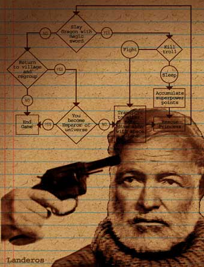

|

The Five Stages of Writing for Interactive
If you think you've got what it takes to write for computer games, think again.
- - - - - - - - - -
by Noah Falstein
 ERHAPS YOU'VE HEARD of the five stages of grief. Most grieving people go through a fairly standard set of feelings and reactions when they suffer a loss or learn deeply disturbing news. You may not know that the film Groundhog Day was modeled after these stages, as Bill Murray's character goes through a day that shows us what it might be like to live in a program with a bug in its loop termination conditions. Even less well known is the application of this theory to the art of writing for interactive titles. The correspondence is startling, perhaps because of the grief often associated with this process, or the deeply disturbing individuals (such as myself) who inhabit our odd industry. Let's follow the process for Jim, a typical writer. ERHAPS YOU'VE HEARD of the five stages of grief. Most grieving people go through a fairly standard set of feelings and reactions when they suffer a loss or learn deeply disturbing news. You may not know that the film Groundhog Day was modeled after these stages, as Bill Murray's character goes through a day that shows us what it might be like to live in a program with a bug in its loop termination conditions. Even less well known is the application of this theory to the art of writing for interactive titles. The correspondence is startling, perhaps because of the grief often associated with this process, or the deeply disturbing individuals (such as myself) who inhabit our odd industry. Let's follow the process for Jim, a typical writer.
Denial
"Interactive writing is just writing. It's no different than writing novels or screenplays. After all, it's just entertainment, and movies have been entertaining far more people for far longer than computer games have."
Our proud, intrepid writer, with five published shorts stories and an advance on a novel from Bantam to his credit, decides it would be a good idea to make a few quick bucks in this new field of interactive. He's sure Universal is going to option his screenplay about an Uzi-toting Priest, "Holier Than Thou", if only he can work out how to handle the love interest. But just in case since his bank account is lower than it should be, a few easy bucks would be a good idea.
Luckily for Jim, he has an in. His neighbor is a programmer at Digital Muse, one of the big computer game publishers. He owes Jim a favor, and refers him to Ken, the producer/designer of a new story based game who's looking for a writer. Jim's on his way.
It is in his first meeting with Ken that Jim has his first realization. Ken explains a simple truth: if people want a pure linear story, they'll get it by reading a book or going to a movie or watching TV. Jim has to learn something about interactivity if he wants a job. But Ken likes his writing and is willing to chance it. Jim also is flexible enough to give it a try, unlike many writers who never get beyond this point. He's got an idea that he thinks may not have been tried before.
Anger
"These ignorant game designers and programmers would tell Tolstoy to cut War and Peace to three pages - double spaced! And cut out the Peace stuff because it doesn't sell!"
The frustration sets in. First Ken vetoes most of the ideas Jim has about the story. He insists that the game must come first. Jim is frustrated, but realizes that he's in a new medium here. When he first started writing a screenplay he had to learn the technical and creative constraints of cinema, abandoning the long internal monologues he'd used in his novel and learning to think visually. Understanding the creative aspects of interactivity is a bigger stretch, but after playing many games and discussing them, Jim realizes Ken is right.
But all is not well. After they agree on a basic approach, Ken insists on changing the structure of the middle of Jim's storyline so that some story elements can happen in any order. Jim's carefully crafted progression of character and revelation of essential clues is thrown into chaos. Even worse, Ken takes the cut-scenes he's already written and tells him to reduce them - by 70%! "No one wants to sit through long scenes without a chance to interact", he warns.
Jim argues that there may be a market for games that are more filmlike - until Ken hauls out a bunch of "interactive movies" that cost millions to make and vanished into the market without a trace. A writer who lives for the art of his work would probably quit at this point. But Jim is pragmatic and wants his stuff to sell well (although he's thinking longingly about his abandoned screenplay) and so, beaten, agrees - and moves on to the next stage.
Bargaining
"If I just try branching pathways, I can make each pathway just like the writing I know."
Like virtually every other writer who came to interactive from linear media, Jim thinks he's got it all figured out. Just add a few branches, and it's basically just like his normal writing, but with interactivity! Unfortunately, this doesn't work for reasons both obvious and subtle. The most obvious is volume of material. If each branch leads to a different story, even a few branches create huge amounts of work through geometric progression. If you fold the branches back into one story, then the choices offered to the player are essentially useless, and no amount of artifice can hide that for long. More subtly, watching a cinematic story unfold with only occasional choices for the player is disconcerting. You get the worst of both worlds - the best cinematic sequences in games fall far short of films, and the limited choices allowed make for boring gameplay. Accordingly, cinematic scenes are often minimized to let the player get into a different, more interactive part of the game. The cinematic scenes are marginalized, and eventually most writers rebel. Writers lacking the confidence to venture beyond the world of writing they know never make it past this point. But even those who get this far with a good attitude usually lose it as they pass into the next phase.
Depression
"It's hopeless. Nothing I do is working. Like Tetris, they're better off without any story at all."
Jim's now at the emotional Rubicon that separates the dabblers from the pros. If he can get through the sinking sense that there's nothing he can bring to the creative mix, he can achieve a real breakthrough become a successful interactive writer. The hard fact is that there are many games with little or no story that have been tremendously successful, and very few story-heavy games that have ever achieved profitability. Coin-op arcade games rarely have any story at all, or at most have a bare few paragraphs of text describing a post-apocalyptic world or a mystical championship to find the greatest fighter in history. Console games on the Nintendo or Playstation are not much better. Even the extremely popular works of Shigeru Miyamoto of Nintendo range from the nonexistent story (Pilotwings) to the very simple story of Legend of Zelda, but depend heavily on gameplay for their popularity. PC based games are the only venue where story games have established themselves, and even there things are grim when measured against the heydey of Infocom and the rise of Sierra and LucasArts adventures in the 80s. In the 90s the two best-sellers in the PC world were Doom, a game whose designers actively disdained the utility of any storyline at all, and Myst, the best-selling PC game of all time. Myst should have been the crowning jewel of story-based games, occupying as it did the Adventure game genre, long the stronghold of story games. But Myst had less story than almost any previous Adventure game, depending instead on an immersive world, beautiful artwork, a haunting soundscape, and a very simple interface to draw in players. These days The Sims fills that same niche, with the players providing their own story.
This is the stage that winnows out the last of the writers unable to make the conceptual leap to interactivity. Some succumb to the depths of depression and either finish their work with lifeless disinterest or simply give up, asking to have their names removed from the credits and leaving the rest of the team to fill in the missing scenes. But for a lucky few, a light begins to dawn.
Acceptance
"Hey, on a deeper level, good interactive writing is a lot like other writing - but with its own set of rules!"
Jim has a breakthrough. He realizes that there are hidden correspondences between good linear writing and good game storytelling. Those scenes in the middle that had to come in any order - that doesn't mean that he can't still build in a progression of tension and release inherent in the interactive structure. When the player picks the areas most interesting to them first, they enjoy the story more. Jim can even change the story in some simple ways depending on how the player chooses to experience it, creating a personalized approach that is more like old-style storytelling around a campfire than any of the impersonal linear forms he's grown used to. By thinking of the flow of the game and story from the player's point of view, Jim realizes that what he thinks of as dramatic tension for a character is often manifest in a puzzle or combat situation for a player. The rules of good drama remaining intact, just mutated into a new form.
Many writers venturing into the interactive field never make it to this final stage. Some of those who do reinvent themselves as designer/writers, learning the basics of game design necessary to make writing come alive in an interactive format. Others simply learn enough to work with a skilled designer, providing their own special skills of character development and story progression but fitting them into the game designer's recommendations and choices.
It's tough to overcome grief, and it can be just as hard to learn to adapt a skill set to a new industry. But for those who persist, both stories can have a happy ending. Even Bill Murray eventually got it right.

|